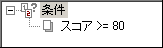
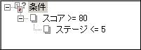
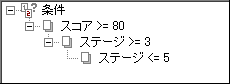
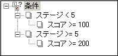

| 条件 |
１．単純な条件
条件を１つだけ設定した例です。ここでは変数「スコア」の値が80以上ならTRUEとなります。

２．AND条件
条件の下にさらに別の条件を設定すると、それらはAND条件となり、全ての条件が満たされた時にTRUEとなります。
この例では、変数「スコア」の値が80以上で、かつ変数「ステージ」の値が５以下ならTRUEとなります。

３．OR条件
同じ階層に複数の条件がある場合、それらはOR条件となり、１個以上の条件が満たされた時にTRUEとなります。
この例では、変数「スコア」の値が80以上か、または変数「ステージ」の値が５以下ならTRUEとなります(両方とも条件を満たしている場合もTRUE)。
４．より複雑な条件
以下は、変数「スコア」の値が80以上で、かつ変数「ステージ」の値が3以上、５以下ならTRUEとなります

以下は、次のどちらかまたは両方の条件が満たされたときTRUEとなります。
①変数「ステージ」の値が5未満で、かつ変数「スコア」の値が100以上
②変数「ステージ」の値が5以上で、かつ変数「スコア」の値が200以上
